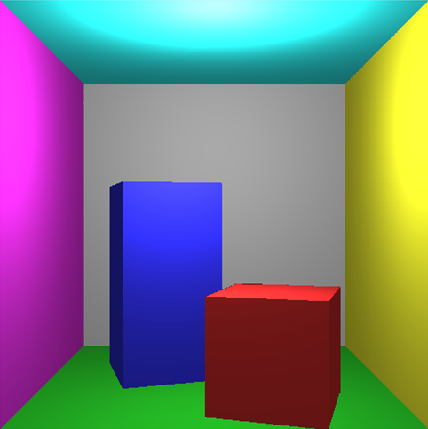
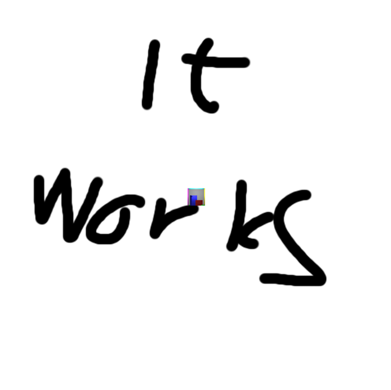
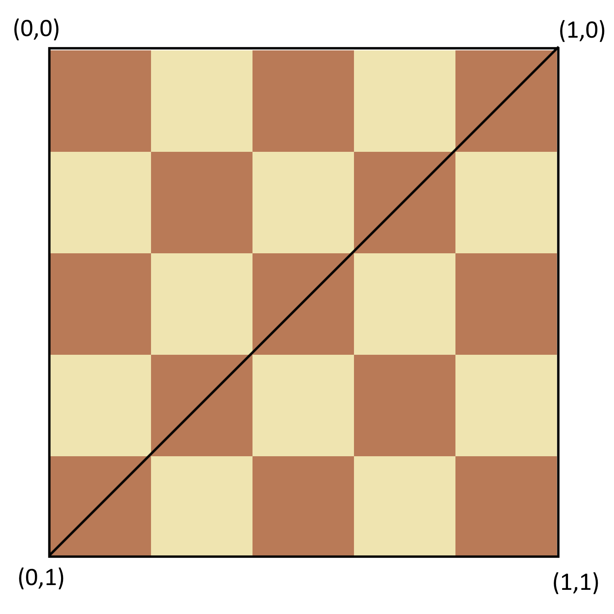
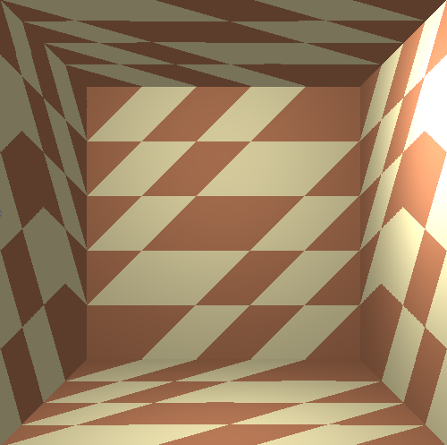
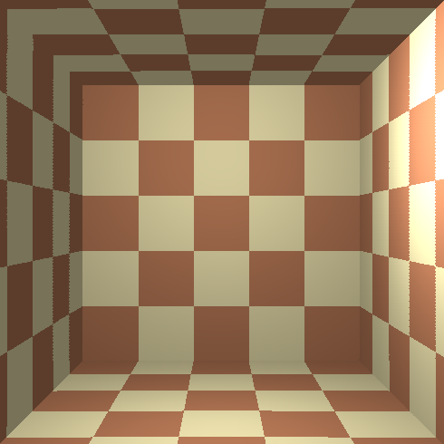
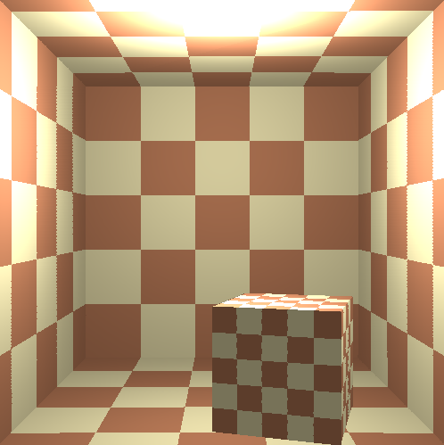
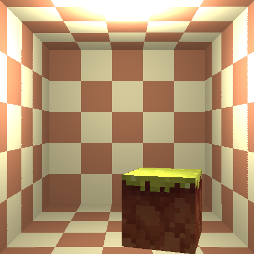

This blog will describe the implementation of my, Markus Wingmyr (wingmyr@kth.se), project for the course DH2323 Computer Graphics and Interaction at KTH Royal Institute of Technology.
For the source code, click here.
For the formal project specification, click here.
For the full project report, click here.
To waste your time, click here.
01 - In the Beginning…
From the rendering track in the course lab work I already have a simple rasterizer. Though it's only capable of rendering surfaces as a uniform colour, see the image below for an example.

And it doesn't look bad sure, but it's a bit boring. There are plenty of areas of improvement that could make this more interesting. But the one I'll be implementing in this project is mapping images to the different surfaces in the render, a so-called texture mapping.
02 - Loading Images
Decoding a png file is not something I felt like making a part of this project so I'm using the stb_image library by Sean Barrett (2014). Loading the test image we can get the following output:

Looks like it works.
03 - Mapping Textures to Surfaces
We can load and print images so it's time to map those images to geometry in the render.
The way I'm doing this is by defining a set of coordinates (u,v) in the texture image and to avoid having to change that mapping for every image u and v are normalized so the same coordinates will work for any image resolution. Below is an example of how a texture could be mapped to a square consisting of two triangles:

The points in-between the vertices also need (u,v) coordinates. Paul Heckbert (1998) describes some methods for mapping texture to geometry, in particular he describes an incremental method which is convenient for me because the rasterizer already renders triangles incrementally so all I need to do is add some interpolation for (u,v). Below is the result from doing that:

Doesn't look quite right… The issue here is that I interpolated (u,v) linearly but (u,v) isn't linear in screen space. Fortunately, I already solved a similar problem in the underlying lab work, each pixel needed to store its 3D position to get the lighting working properly but the 3D position is obviously not linear in the 2D screen space so we had to multiply it with a factor that is linear in screen space, namely 1/z. Doing the same for (u,v) we get the following image:

Much better.
04 - Extra Geometry and Bug Fixes
The texture mapping is done but just for fun let's see add a box to see what that looks like:

Pretty cool. Though the perceptive reader will notice that lighting looks different from the other entries, this is because the way the normal for the surfaces gets computed is dependent on the order of which the vertices are defined. Since I discovered this fairly late in the project the solution is simply manually changing the order of the vertices to make the calculation work.
Another thing we can try is to add different textures to the different surfaces, for example:

Minecraft grass block texture from the Good Vibes texture pack by Acaitart (2021).
Now I would say the rasterizer is working pretty well with the texture mapping and I don't have the patience to se up a more interesting scene so this will be the last entry.
References
-
Heckbert, Paul (1998)
Fundamentals of Texture Mapping and Image Warping -
Sean Barrett (2014)
stb
GitHub repository: https://github.com/nothings/stb
Accessed: 2026-05-12 -
Acaitart (2021)
GoodVibes Voxel Asset Pack
Source: GitHub - GoodVibes Asset Pack
Distributed under CC BY via Phyronnaz/VoxelAssets repository
Accessed: 2026-05-12